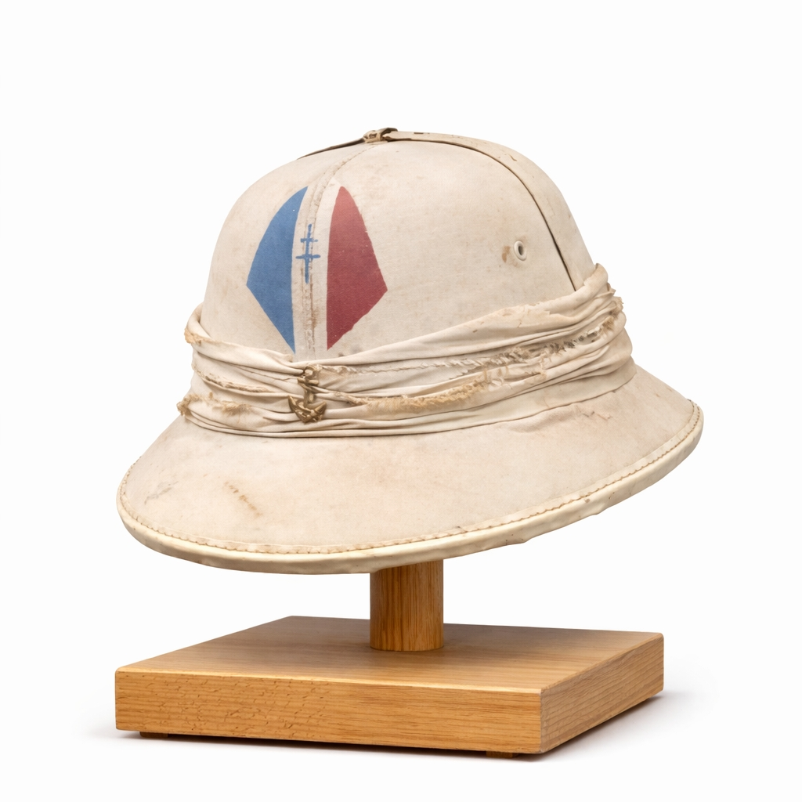

Ce casque colonial blanc, orné d’une croix de Lorraine peinte, est l’un des symboles les plus rares de la France Libre. Utilisé principalement en Afrique Équatoriale Française, au Cameroun, au Levant et dans certaines unités ralliées, il servait aux personnels administratifs, aux troupes de protection et aux formations non-combattantes.
Contrairement aux casques Adrian portés au combat, ce casque tropical était destiné aux climats chauds et aux missions de service, de poste ou de représentation.
Après l’appel du 18 juin 1940, plusieurs territoires coloniaux se rallient à la France Libre. Les personnels locaux et les volontaires FFL adoptent la croix de Lorraine comme symbole d’identification. Sur certains casques coloniaux, elle est peinte directement, créant des variantes uniques aujourd’hui très recherchées.
Ce casque n’était pas destiné au combat, mais il représente l’engagement des troupes coloniales et des services de la France Libre dans la lutte contre l’Axe.